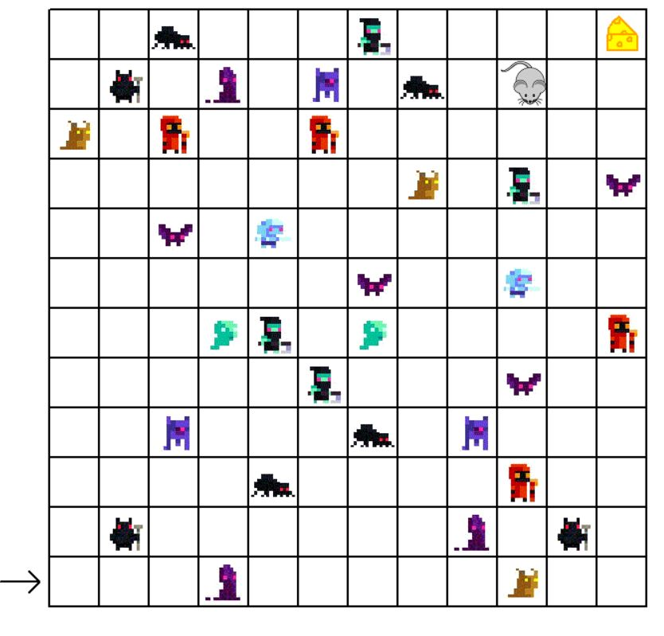

Portfolio Page!

For this project we decided to make a mouse move through a maze filled with enemies in
order to reach a piece of cheese at the end. After reaching the cheese, the mouse would
continue into an enemy and "die". To create this project, we drew the background grid
and imported the enemies as turtles. We created a mouse turtle and gave it custom
movements to create its way around the maze.